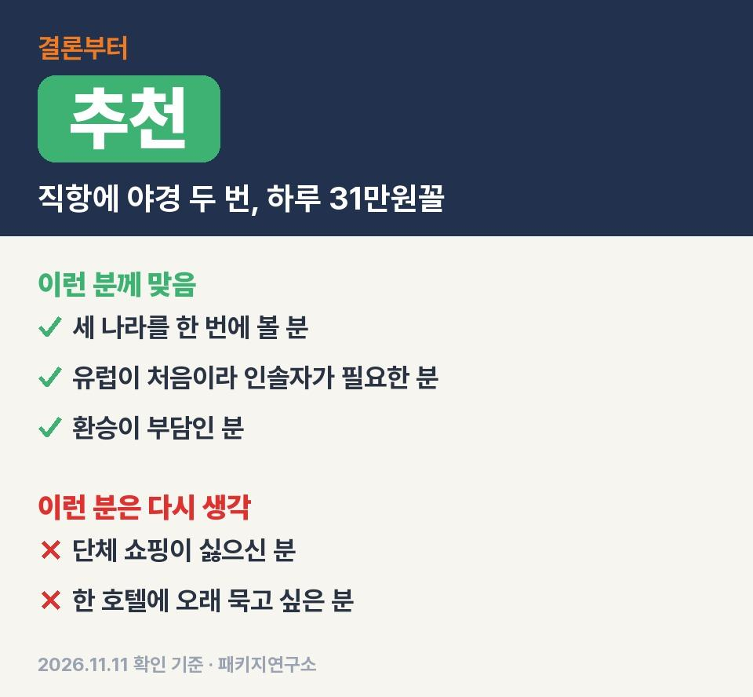
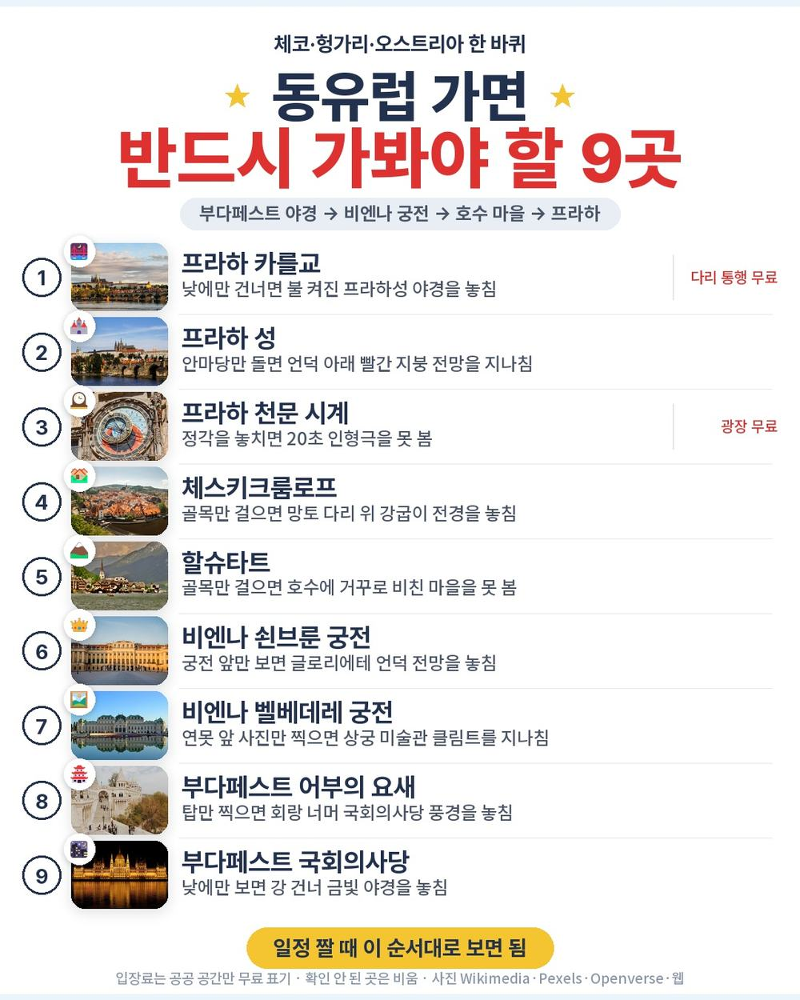
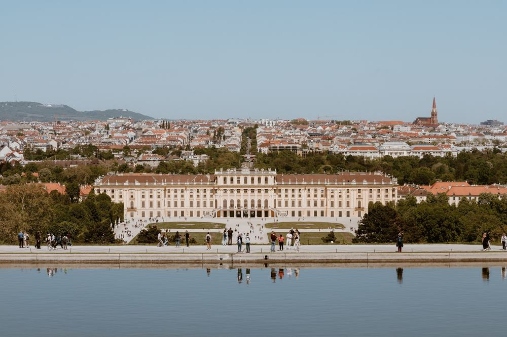
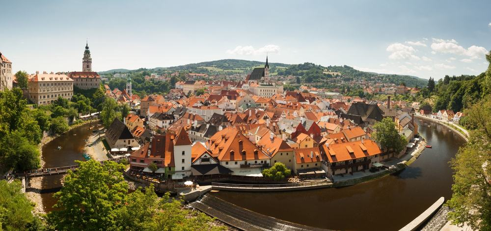

동유럽 3국 상품 중 부다페스트와 프라하 야간 투어를 둘 다 필수 관광으로 박아 둔 구성은 생각보다 흔치 않음. 이 상품은 거기에 인천–프라하 아시아나 직항까지 붙음.
다녀온 후기가 아니라, 일정표·포함·불포함·선택관광 원문을 줄 단위로 맞춰 본 기록임.
결론 — 추천. 직항 왕복, 호텔 7박, 식사 20회, 야간 투어 2번에 쇤브룬·벨베데레까지 279만 2천원 안에 있음. 다만 단체 쇼핑이 싫으신 분은 맞지 않음.

오늘 기준 출발일별 요금 보기
https://naver.me/FUiCibtX

| 항목 | 내용 |
|---|---|
| 가격 | 1인 2,792,000원 (성인 · 12월 출발 기준) · 2인 5,584,000원 |
| 여행사 | 참좋은여행 |
| 항공 | 아시아나 직항 (OZ545·OZ546, A350) · 갈 때 약 13시간 / 올 때 11시간 10분 |
| 숙소 | 투어리스트급 또는 일급 7박 · 호텔명은 출발 1일 전 안내 · 비엔나만 2박 연박 |
| 일정 | 8박 9일 · 체코 → 헝가리 → 오스트리아 → 체코 · 버스 · 전문 인솔자 동행 · 단체 쇼핑 3회 · 가이드·기사 경비 1인 90유로 별도 |
▶ 내 출발일 오늘 기준 요금 확인 (제휴 링크 · 예약 시 수수료를 받으며 가격은 같습니다)
▶ 11월 11일 기준 동유럽 패키지 최저 229만원부터 — 출발일별 값 한 화면에: 비교 페이지
| 번호 | 내용 | 한 줄 답 |
|---|---|---|
| 1 | 이 값에 들어 있는 것 | 야간 투어 2번 |
| 2 | 현장에서 더 낼 돈 | 2인 약 27만 1천원 |
| 3 | 일정과 체력 | 버스 약 22시간 |
| 4 | 자유여행으로 짜면 | 항공값 미확인 |
| 5 | 맞는 분 · 안 맞는 분 | 3 대 3 |
직항·인솔자·야간 투어 두 번이 한 값에 묶여 있다는 게 이 상품의 핵심임.
- 항공: 아시아나 인천–프라하 직항 왕복, 유류할증료·제세공과금 포함
- 숙소: 투어리스트급 또는 일급 7박, 2인 1실
- 식사: 20회(기내식 포함), 맛체험 4번 — 스비치코바·슈니첼·호이리게·굴라쉬
- 필수 관광: 부다페스트 야간 투어 · 프라하 야간 투어 · 쇤브룬 궁전과 정원 · 벨베데레 궁전
- 사람: 전문 인솔자 9일 동행, 일부 관광지는 현지 가이드
- 그 밖: 일정 속 관광지 입장료, 여행자보험

호텔 이름이 출발 하루 전에야 나온다는 점은 미리 알고 가야 함. 대신 비엔나 두 밤은 같은 호텔이라 그날은 짐을 안 쌈.
꼭 내는 건 가이드 경비 90유로 하나고 선택관광을 몇 개 하느냐가 나머지 예산을 정함.
| 항목 | 금액 | 필수/선택 | 비고 |
|---|---|---|---|
| 가이드·기사 경비 | 180유로 (약 27만 1천원) | 필수 | 1인 90유로 |
| 성 비투스 대성당·황금소로 내부 | 120유로 | 선택 | 1인 60유로, 안 하면 주변 자유시간 |
| 프라하 올드 트램 또는 엔틱카 | 100유로 | 선택 | 1인 50유로 |
| 호엔잘츠부르크성 푸니쿨라 | 80유로 | 선택 | 1인 40유로 |
| 비엔나 음악회 | 200유로 | 선택 | 1인 100유로, 안 하면 호텔 휴식 |
| 잘츠카머구트 유람선 + 케이블카 | 180유로 | 선택 | 1인 90유로 |
| 합계 (2인 필수분) | 180유로 (약 27만 1천원) | 1유로 약 1,508원 · 2026-11-10 환율 |
- 2인 총액(필수분까지): 약 585만 5천원
- 선택관광 다섯 가지를 다 하면 2인 680유로(약 102만 5천원)가 더 붙음
- 물값·매너 팁 같은 개인 비용은 따로임
비엔나 하루를 빼면 날마다 버스로 도시를 옮겨서, 버스 시간보다 짐 싸는 횟수가 체력을 더 씀.
| 일차 | 가는 곳 | 버스 | 걷기 | 점심 · 저녁 |
|---|---|---|---|---|
| DAY 1 | 인천 → 프라하 → 브르노 | 약 3시간 | 적음 | 기내식 · 기내식 |
| DAY 2 | 에스테르곰 대성당 → 센텐드레 → 부다페스트 야경 | 약 4시간 30분 | 보통 | 현지식 · 현지식 |
| DAY 3 | 어부의 요새 → 성 이슈트반 성당 → 영웅 광장 → 비엔나 | 약 3시간 | 보통 | 한식 · 현지식 |
| DAY 4 | 벨베데레 → 슈테판 대성당 → 호프부르크 → 쇤브룬 | 약 1시간 | 중상 | 중식 · 현지식 |
| DAY 5 | 멜크 수도원 → 잘츠부르크 미라벨 정원 → 푀클라브루크 | 약 4시간 | 보통 | 현지식 · 현지식 |
| DAY 6 | 잘츠카머구트 → 할슈타트 → 체스키부데요비치 | 약 3시간 30분 | 보통 | 중식 · 현지식 |
| DAY 7 | 체스키크룸로프 → 플젠 양조장 → 프라하 야경 | 약 3시간 | 중상 | 한식 · 현지식 |
| DAY 8 | 프라하 성 → 카를교 → 천문 시계 → 바츨라프 광장 → 공항 | 약 40분 | 중상 | 중식 · 기내식 |
- 버스: 9일 합쳐 약 22시간 40분(추정), 첫날 내리자마자 3시간
- 걷기: 프라하·체스키크룸로프는 돌길, 할슈타트는 오르막이 섞임
- 12월이라 해가 일찍 짐 — 야경 투어엔 두꺼운 외투가 필요함

버스에서 오래 앉아 있는 날이 이어지니 목베개 하나가 꽤 쓸모 있음. 무릎이 불편하시면 돌길 많은 날 아침에 인솔자에게 미리 말해 두시면 됨.
이 상품 조건 한눈에 (출발일 달력·두 분 값·비슷한 상품과 비교)
https://pkg-lab.com/pkg/EPP4557_OZ/?utm_source=ghpages&utm_medium=post&utm_campaign=daily
같은 목적지 다른 여행사 패키지, 쇼핑·선택관광·가이드 경비까지 비교
https://pkg-lab.com/dest/EURO_10002/m/2026-12/?utm_source=ghpages&utm_medium=post&utm_campaign=daily
항공값을 오늘 조회하지 못해 합계는 비워 뒀고 세 나라 도시 이동을 직접 잡는 수고가 제일 큰 차이임.
| 항목 | 금액 | 근거 |
|---|---|---|
| 인천–프라하 왕복 항공 | 확인 못 함 | 2026-11-11 마이리얼트립 조회 실패 — 숫자를 지어내지 않음 |
| 호텔 7박 | 확인 못 함 | 도시마다 값이 크게 달라 비워 둠 |
| 식사 (20회) | 확인 못 함 | 맛체험 4번 포함 구성 |
| 도시 간 이동 · 공항 이동 | 직접 예약 | 기차·버스를 도시마다 따로 잡아야 함 |
| 여행자보험 | 따로 가입 | 패키지는 포함 |
| 가이드 | — | 자유여행은 없음(패키지는 인솔자 동행) |
| 합계 | 확인 못 함 |
- 패키지: 항공·호텔·식사·입장료·인솔자까지 1인 279만 2천원
- 자유여행: 세 나라 8개 도시를 기차·버스로 직접 이어야 함
체코·헝가리·오스트리아를 9일에 다 도는 동선은 혼자 짜면 이동 예약만 열 번 가까이 됨. 처음 가는 동유럽이면 이 부분을 맡기는 값으로 보면 됨.
걸리는 건 쇼핑과 잦은 호텔 이동이고 명소 구성은 세 나라 대표 코스를 빠짐없이 돎.
| 맞는 분 | 안 맞는 분 |
|---|---|
| 세 나라 대표 명소를 한 번에 볼 분 | 단체 쇼핑 일정이 아예 싫으신 분 |
| 유럽이 처음이라 인솔자가 필요한 분 | 한 호텔에 오래 묵고 싶은 분 |
| 환승 없이 직항을 원하는 분 | 선택관광까지 다 하실 분(1인 340유로 추가) |
이 상품으로 다녀온 분들 후기를 보면 할슈타트 호숫가 산책이 동화 같았다는 말, 인솔자가 일정을 꼼꼼히 챙겨 편했다는 말이 되풀이됨. 아쉬운 쪽은 자유시간이 짧았다는 것과 식사 양. 컵라면 몇 개 챙겨 가라는 요령도 같이 나옴.
Q. 동유럽 패키지 가이드 경비는 얼마인가요?
A. 이 상품은 1인 90유로를 현지에서 냄. 성인·아동 같음. 상품가에는 안 들어 있음.
Q. 동유럽 패키지 쇼핑은 몇 번 가나요?
A. 단체 쇼핑 3회. 체코 크리스탈·보석, 헝가리 와인·비타민, 오스트리아 의류·시계 매장에 각 40분쯤 들름. 사는 건 자유임.
Q. 동유럽 패키지 인솔자가 끝까지 같이 가나요?
A. 이 상품은 전문 인솔자가 전 일정 동행함. 일부 관광지에서는 현지 가이드가 따로 붙음.
직항과 인솔자, 야간 투어 두 번까지 묶은 구성이라 동유럽이 처음인 분께 특히 맞음. 쇼핑 세 번이 괜찮다면 망설일 부분이 크지 않음.
출발일에 따라 값이 달라서 가시려는 날짜 요금부터 확인하시면 됨.
오늘 기준 출발일별 요금 보기
https://naver.me/FUiCibtX
이 글에는 네이버 제휴 링크가 포함되어 있으며, 링크를 통해 예약하시면 일정 수수료를 받습니다. 가격은 동일합니다. 가격과 구성은 2026년 11월 11일 확인 기준이며 출발일에 따라 달라질 수 있습니다.
▶ 이 상품, 영상으로 보기 (유튜브)
▶ 동유럽 패키지 오늘 값 나란히 비교
▶ 같은 목적지 다른 여행사 패키지, 쇼핑·선택관광·가이드 경비까지 비교: pkg-lab.com